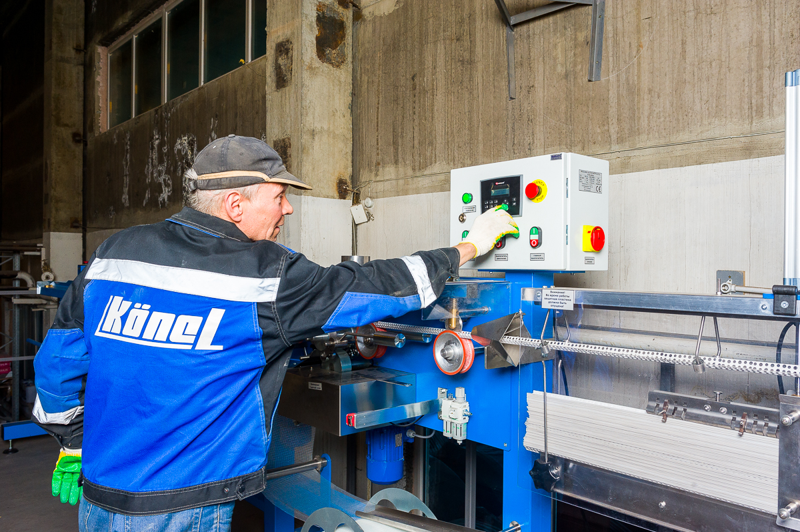
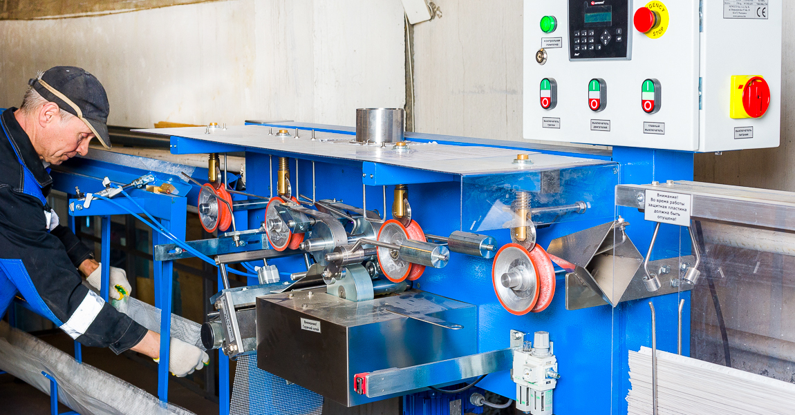
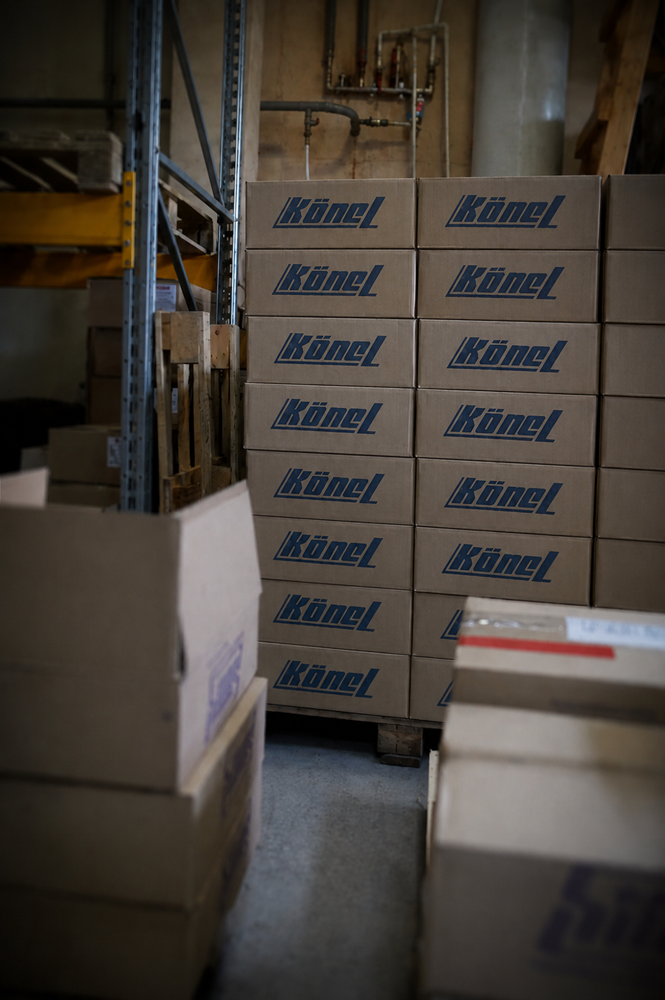

Закрытая продажа · Екатеринбург
ПРОИЗВОДСТВО КЁНЕЛ ПРОДАЁТСЯ
Готовое производство фасадных комплектующих: пять станков, команда, бренд и около 100 контрагентов.

01 / Финансы
ФАКТ 2025.
ПЛАН 2026.

Линия выпуска фасадных комплектующих02 / Клиенты
ОКОЛО 100
КОНТРАГЕНТОВ
Продажи распределены между продавцами отделочных материалов в различных городах России, что снижает зависимость от отдельных контрагентов.
ООО «Сатурн» · федеральная сетьООО «1 Стройцентр Сатурн-Р» · федеральная сетьООО «Брозэкс» · Свердловская областьООО «Декоратор» · Самара

03 / Активы
5 СТАНКОВ.
ОДНА СИСТЕМА.
- Три линии ОК-12А
- Линия ОК-12С
- Станок для намотки сетки в рулоны
- Запайщики, таль, компрессоры
- Оборудование для хранения
Здание и земля не входят
Производственные, складские и офисные площади арендуются. Возможна выгодная долгосрочная аренда.
04 / Обязательства
0
КРЕДИТНЫХ
СРЕДСТВ
По данным собственника, просроченных обязательств нет.
80% клиентов работают с отсрочкой в среднем 30 дней и платят вовремя.
Переход к пассивным инвестициям
05 / Условия передачи бизнеса
ПЕРЕДАЧА
БЕЗ РАЗРЫВА
Личная передача знаний и кураторство от владельца в течение 6 месяцев — по любым вопросам.
Весь производственный коллектив готов перейти.
Отдел продаж переходит при необходимости.
Отдельного руководителя отдела продаж нет: собственник управлял сам.

06 / Формат сделки
Закрытая продажаПРОИЗВОДСТВО
ПРОИЗВОДСТВО
ПОД КЛЮЧ
Покупателю передаются бренд «Кёнел», оборудование, клиентская база, команда, а также технологии производства и продаж. Земельный участок и здание в сделку не входят. Сырьё, материалы и готовая продукция оплачиваются отдельно — по фактическим остаткам на дату сделки. Подробные условия предоставляются после первичного контакта.
Непубличное предложение
УЗНАТЬ АКТУАЛЬНУЮ
ЦЕНУ ПРОДАЖИ
Частный агент представляет интересы собственника, организует первичные переговоры и предоставляет конфиденциальные материалы потенциальным покупателям.
Конфиденциальность сделки
Продажа осуществляется в закрытом формате. Все вопросы, связанные с приобретением бизнеса, ведутся через частного агента.
До первичного контакта просим не обращаться напрямую к сотрудникам, клиентам и контрагентам компании.
После квалификации запроса агент предоставит необходимые материалы и организует переговоры с собственником.